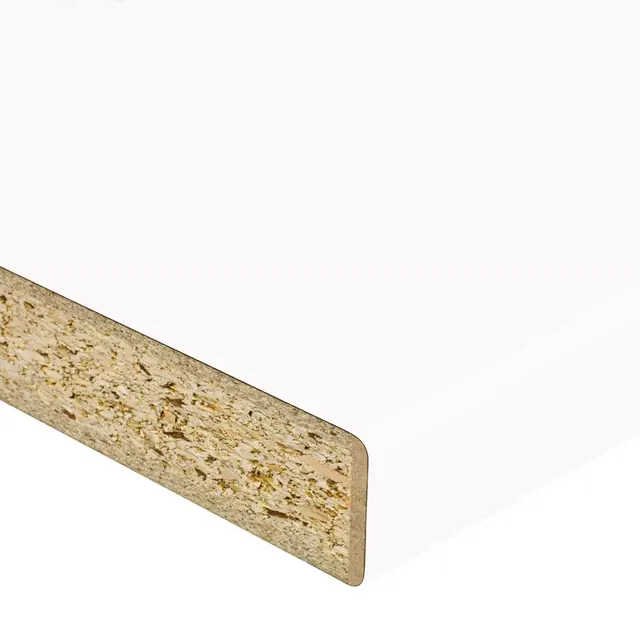
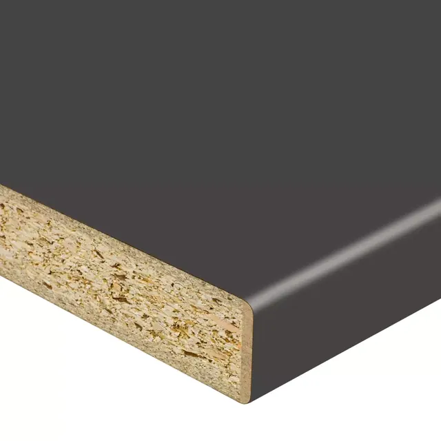

Strona główna / Blaty kuchenne
Blaty kuchenne Swiss Krono
Blaty laminowane na płycie wiórowej, grubość 28 i 38 mm, szerokość 60 i 120 cm. Do blatu dobierzesz listwę przyblatową, obrzeże i laminat HPL w tym samym dekorze.
Kliknij dekor, a w nowej karcie otworzy się jego strona w katalogu Swiss Krono.
Jednolite kolory

U8681Biały Alaska Karta w Swiss Krono
U164Antracyt Karta w Swiss KronoTo wybrane dekory. Pełną kolekcję zobaczysz w katalogu blatów Swiss Krono, a dostępność w magazynie sprawdzimy telefonicznie.
Do blatu w tym samym dekorze
-
Listwy przyblatowe i obrzeża
Listwy do blatów i obrzeża HPL do blatów dobierzemy do wybranego dekoru.
-
Laminat HPL
We wszystkich dekorach blatów. Format 4100 lub 3050 x 1320 mm, grubość 0,6 lub 0,8 mm, norma EN 438. Zamówienie od 1 arkusza, realizacja około 14 dni.
-
Blaty Black Wood, II gatunek i wyprzedaże
Aktualne stany znajdziesz na platformie B2B.
Sprawdź, czy dekor jest na magazynie
Podaj kod dekoru (np. D1094), grubość i liczbę sztuk.
- Małgorzata Reszczyńska609 022 064
- Grzegorz Puchalski601 649 362